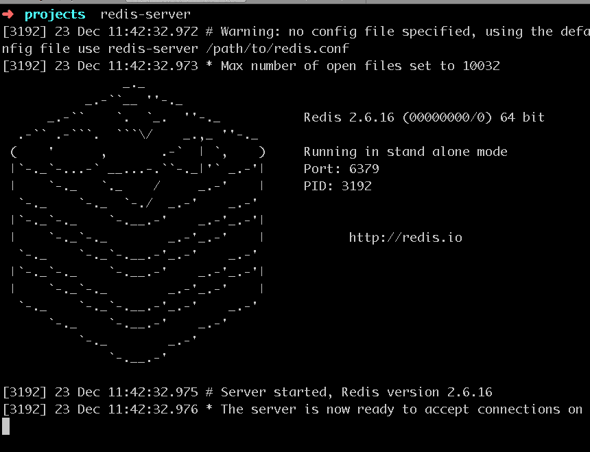
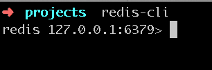

整理了一下最近學到的 Redis，所以就來整理一下囉！從 Google 上可以找到一些關於 Radis 的介紹，大致上有以下幾項特性:
所支援的語言更有 ActionScript、C、C++、C#、Clojure、Common、 Lisp、Dart、Erlang、Go、Haskell、Haxe、Io、Java、Node.js、Lua、Objective-C、Perl、PHP、Pure Data、Python、R[5]、Ruby、Scala、Smalltalk、Tcl….之多，不過我主要還是拿來當 php 的應用！ 以下會介紹在 Mac OSX 上的安裝，以及 CodeIgniter 上面的使用...等！
依順序輸入以下步驟:
wget http://download.redis.io/releases/redis-2.8.3.tar.gztar xzf redis-2.8.3.tar.gzcd redis-2.8.3sudo make testmake啓動 Redis Server，輸入指令: redis-server

接下來啟動 Redis 的 Client，輸入指令: redis-cli

開啓 Redis 的 Client 後，就可以用指令去查詢，如果一直不能習觀沒有 GUI 界面的話，可以參考這篇使用 phpRedisAdmin 的管理界面！